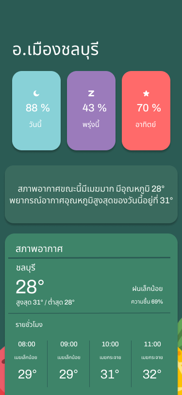

For farmer เป็นแอปพลิเคชันเพื่อช่วยเหลือเกษตรกรหรือผู้ที่สนใจในด้านการเกษตร
โดยแอปพลิเคชัน For farmer นี้จะทำให้สามารถทราบว่าควรรับมืออย่างไรเมื่อสภาพอากาศเกิดการเปลี่ยนแปลง
วัตถุประสงค์
- เพื่อพัฒนาแอปพลิเคชันสำหรับประยุกต์ใช้ด้านการเกษตร
- เพื่อลดความสูญเสียของผลผลิตที่จะเกิดขึ้นโดยมีสภาพอากาศเป็นปัจจัย
- เพื่อให้เกษตรกรสามารถทำการเพาะปลูกและเก็บเกี่ยวได้ถูกวิธี รวมถึงแก้ปัญหาได้ตรงจุด ทำให้ได้ผลผลิตที่มีประสิทธิภาพมากขึ้น
เป้าหมายและขอบเขตของโครงการ
โครงการนี้ถูกพัฒนาขึ้นเพื่อช่วยเหลือเกษตรกรทางด้านการเปลี่ยนแปลงของสภาพภูมิอากาศ โดยปัญหาหลัก ๆ ที่เกษตรกรต้องพบเจอ
คือการเปลี่ยนแปลงของสภาพอากาศ นำไปสู่ผลผลิตทางการเกษตรลดลง การเพาะปลูกไม่ได้ผลผลิตเท่าที่ควร ส่วนผู้ที่สนใจในด้านการเกษตรอาจจะยังมีความรู้ไม่มากพอ
จึงทำให้ผู้พัฒนาอยากจะพัฒนาแอปพลิเคชันเพื่อเพิ่มระดับผลผลิต สร้างรายได้ และให้ความรู้แก่เกษตรกร
Prototype
การเข้าสู่ระบบ
การสมัครสมาชิก

การเปิดใช้งานตำแหน่งที่ตั้ง
แอปพลิเคชัน For farmer นี้ทำให้เกษตรกรมือใหม่หรือผู้ที่สนใจในด้านการเกษตรสามารถทราบว่า
ควรเก็บผลผลิตเมื่อใด สภาพอากาศในวันถัดไปจะส่งผลอย่างไรกับผลไม้ กรณีที่มีปริมาณฝนตกมากจะส่งผลต่อผลไม้ชนิดใด
การแสดงข้อมูลระยะเวลาและคำแนะนำ
สภาพอากาศภายในพื้นที่

การแจ้งเตือน
การพัฒนาแอปพลิเคชันนี้จึงเป็นแนวทางที่เหมาะสมต่อการทำการเกษตร เพื่อให้เกษตรกรปรับเปลี่ยน
จากระบบการผลิตแบบต้องพึ่งพาลมฟ้าอากาศเพียงอย่างเดียว ไปสู่การกำหนด วางแผน และบริหารจัดการผ่านแอปพลิเคชัน